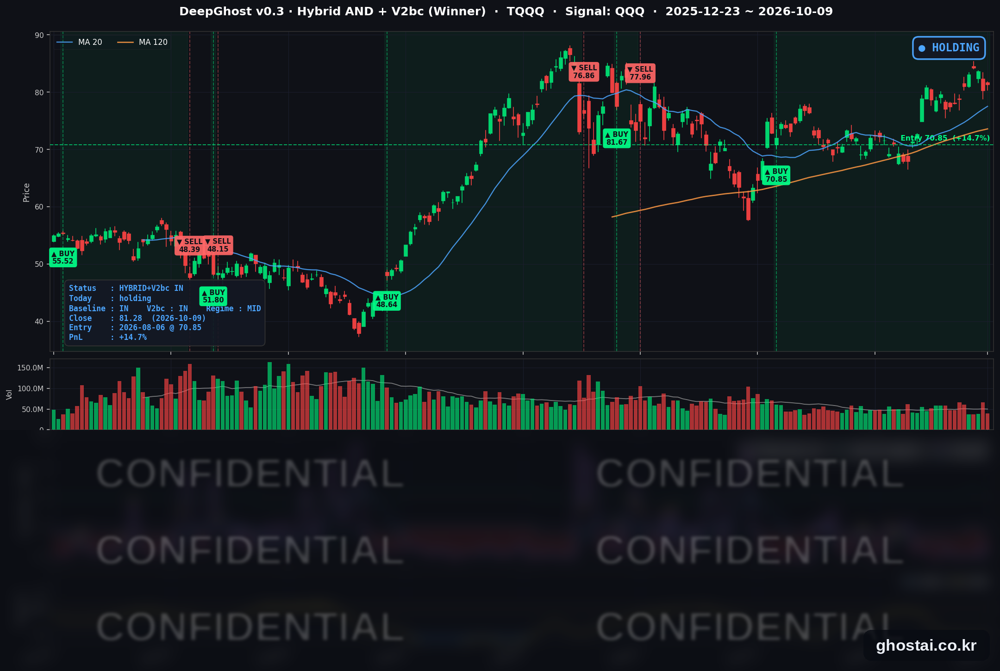
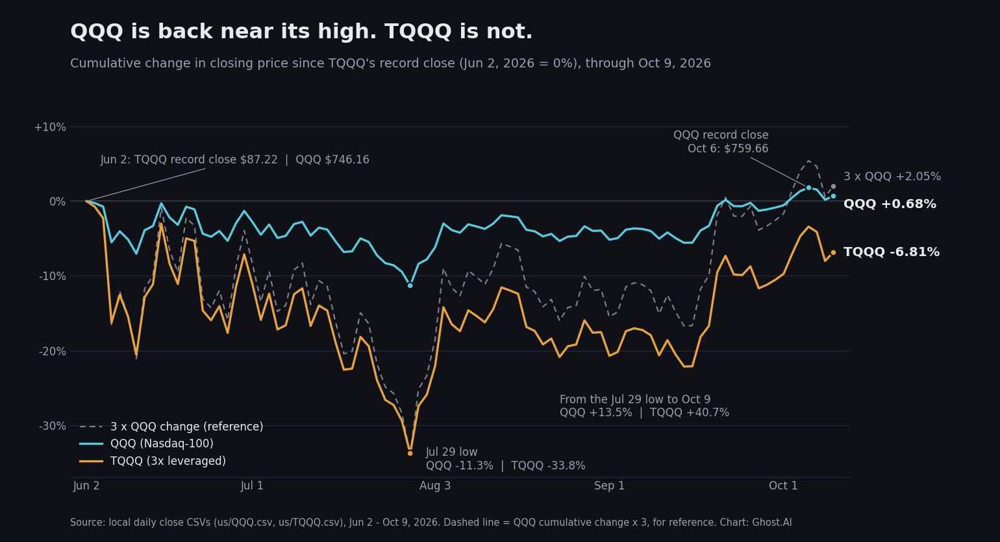
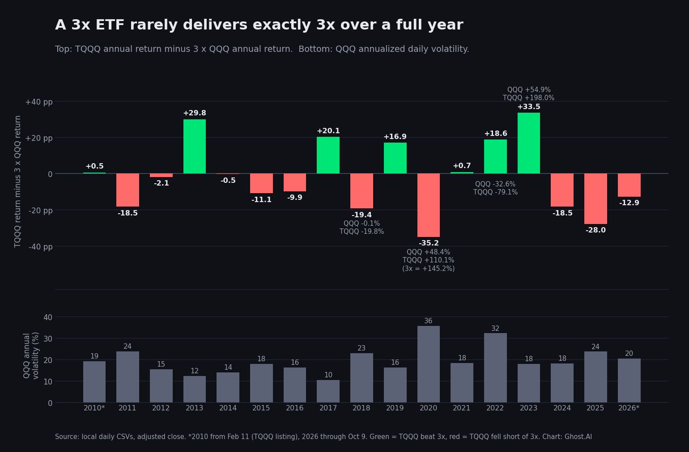

QQQ 사상최고가/TQQQ는 왜 -7%?
· Ghost.AI 데일리 리포트
👻 매일 시그널과 히스토리를 홈페이지에서 한눈에 → www.ghostai.co.kr
회원 페이지 안내 — 회원 가입하시면 커버리지 전 종목의 원본 시그널과 분석 레포트를 매일 확인하실 수 있습니다. 회원 페이지는 블로그·유튜브보다 먼저 업데이트됩니다. 선착순 100명을 모집하고 있으며, 이메일과 필명만으로 가입하실 수 있고 서비스 사용료는 받지 않습니다. 가입 신청 후 운영자 승인을 거쳐 이용하실 수 있습니다.
TQQQ가 사상 최고 종가(87.22달러)를 기록한 6월 2일 이후 나스닥100(QQQ)은 0.68% 올랐고, 10월 6일에는 사상 최고 종가도 기록했습니다. 같은 기간 TQQQ는 6.81% 내렸습니다. QQQ 하루 등락률의 3배를 따라가는 상품인데, 기간으로 보면 3배가 아니라 방향까지 반대로 나온 것입니다. 이번 특별호에서는 이 차이가 생기는 이유인 변동성 손실을 숫자 예시와 2010년 이후 연도별 기록으로 확인하고, TQQQ 전략이 현금으로 있던 날이 어떤 날이었는지 백테스트 결과로 살펴봅니다. TQQQ 전략은 이번 주에도 보유를 유지했고, 10월 9일 종가 기준 수익률은 +14.72%입니다.
📊 전략 상태 (10월 9일 종가 기준)
| 항목 | 내용 |
|---|---|
| 다음 거래일(10/12 월) 할 일 | ✅ 아무것도 안 해도 됩니다 (10/9 종가 기준 새 신호 없음) |
| 포지션 상태 | 📈 TQQQ 보유 중 (IN POSITION) |
| 매수 진입일 | 2026-08-06 (46거래일째, 달력 기준 64일) |
| 진입가 → 현재가 | $70.85 → $81.28 |
| 현재 포지션 수익 | +14.72% |
TQQQ 시그널 — IN POSITION
현재 상태: 매수 포지션 유지 중 | 이번 포지션 수익 +14.72%

TQQQ는 이번 주 81.01달러에서 81.28달러로 0.33% 올랐습니다. 전략의 평가수익률은 전주 말 +14.34%에서 10월 6일 +18.91%(8월 6일 진입 이후 최고)까지 올랐다가, 10월 8일 QQQ가 1.34% 내린 날 +13.24%로 낮아졌고 금요일 반등으로 +14.72%가 됐습니다. 이번 주에는 새 매매 신호가 없었고, 모델 기준으로 매도 신호까지의 여유는 주말 기준 한 주 전과 비슷한 수준입니다.
8월 6일 진입 이후 QQQ는 진입일 시가(710.82달러) 대비 5.69% 올랐고, TQQQ는 14.72% 올랐습니다. 이번 보유 기간에도 TQQQ 상승률은 QQQ의 3배(약 17%)가 아니라 2.59배입니다. 이 차이가 이번 특별호의 주제입니다.
주제 — 3배 레버리지의 변동성 손실
1. 지금 일어나고 있는 일
| 항목 | QQQ | TQQQ |
|---|---|---|
| 사상 최고 종가 | 759.66달러 (10/6) | 87.22달러 (6/2) |
| 10/9 종가 | 751.27달러 | 81.28달러 |
| 사상 최고 종가 대비 | -1.10% | -6.81% |
| 6/2 → 7/29 저점 | -11.32% | -33.79% |
| 7/29 저점 → 10/9 | +13.53% | +40.74% |
| 6/2 이후 합계 | +0.68% | -6.81% |
6월 2일 이후 QQQ는 7월 29일까지 11.32% 내렸다가 13.53% 올라 출발점보다 조금 위에 있습니다. TQQQ는 같은 구간에 33.79% 내렸다가 40.74% 올랐습니다. 내릴 때도 오를 때도 QQQ의 3배 가까이 움직였지만, 결과는 출발점보다 6.81% 아래입니다.
이유는 손실 뒤의 회복 계산에 있습니다. 11.32% 내린 QQQ가 제자리로 돌아오려면 12.76% 올라야 합니다. 33.79% 내린 TQQQ가 제자리로 돌아오려면 51.03% 올라야 합니다. 하락 폭이 3배이면 제자리로 돌아오는 데 필요한 상승률은 3배보다 더 커집니다.

2. 왜 3배가 아닌가 — 숫자 예시
TQQQ는 QQQ의 하루 등락률의 3배를 목표로 하는 상품입니다. 매일 3배를 새로 맞추기 때문에 하루 단위로는 3배를 따라가지만, 며칠·몇 달 단위로는 3배가 되지 않습니다.
| 구분 | 시작 | 1일차 | 2일차 | 이틀 합계 |
|---|---|---|---|---|
| 지수 (+10%, -10%) | 100 | 110 | 99 | -1% |
| 3배 상품 (+30%, -30%) | 100 | 130 | 91 | -9% |
지수는 이틀 동안 1% 내렸는데 3배 상품은 3%가 아니라 9% 내렸습니다. 오르고 내리기를 반복할수록 이 차이는 커집니다. 기초지수가 오르내리는 과정에서 생기는 이 손실을 변동성 손실이라고 합니다.
반대로 한 방향으로 꾸준히 움직이면 결과가 달라집니다. 이틀 연속 10%씩 오르면 지수는 21%, 3배 상품은 69% 올라 3배(63%)보다 더 오릅니다. 매일 늘어난 금액에 다시 3배가 적용되기 때문입니다.
이번 주가 실제 예입니다.
| 날짜 | 10/5 | 10/6 | 10/7 | 10/8 | 10/9 | 주간 |
|---|---|---|---|---|---|---|
| QQQ | +0.88% | +0.46% | -0.25% | -1.34% | +0.49% | +0.23% |
| TQQQ | +2.60% | +1.36% | -0.75% | -4.05% | +1.31% | +0.33% |
하루하루는 3배 가까이 움직였지만, 한 주 합계는 QQQ +0.23%, TQQQ +0.33%로 1.4배에 그쳤습니다. 2010년 이후 하루 등락만 비교하면 TQQQ는 QQQ의 약 2.96배로 움직였습니다. 하루 단위로는 3배, 기간이 길어지면 3배가 아닙니다.
3. 연도별 기록 — 3배를 넘은 해, 못 미친 해
| 연도 | QQQ | TQQQ | QQQ×3 | 차이 (TQQQ − 3배) | QQQ 연 변동성 |
|---|---|---|---|---|---|
| 2010 (2/11~) | +25.9% | +78.1% | +77.6% | +0.5%p | 19.1% |
| 2011 | +3.5% | -8.0% | +10.4% | -18.5%p | 23.7% |
| 2012 | +18.1% | +52.3% | +54.3% | -2.1%p | 15.3% |
| 2013 | +36.6% | +139.7% | +109.9% | +29.8%p | 12.2% |
| 2014 | +19.2% | +57.1% | +57.5% | -0.5%p | 13.8% |
| 2015 | +9.4% | +17.2% | +28.3% | -11.1%p | 17.9% |
| 2016 | +7.1% | +11.4% | +21.3% | -9.9%p | 16.2% |
| 2017 | +32.7% | +118.1% | +98.0% | +20.1%p | 10.3% |
| 2018 | -0.1% | -19.8% | -0.4% | -19.4%p | 22.9% |
| 2019 | +39.0% | +133.8% | +116.9% | +16.9%p | 16.2% |
| 2020 | +48.4% | +110.1% | +145.2% | -35.2%p | 35.6% |
| 2021 | +27.4% | +83.0% | +82.3% | +0.7%p | 18.2% |
| 2022 | -32.6% | -79.1% | -97.7% | +18.6%p | 32.2% |
| 2023 | +54.9% | +198.0% | +164.6% | +33.5%p | 17.9% |
| 2024 | +25.6% | +58.3% | +76.7% | -18.5%p | 18.0% |
| 2025 | +20.8% | +34.4% | +62.3% | -28.0%p | 23.6% |
| 2026 (~10/9) | +22.4% | +54.4% | +67.3% | -12.9%p | 20.4% |
수정주가(분배금 반영) 기준. 2010년은 TQQQ 상장일(2월 11일)부터. 연 변동성은 QQQ 하루 등락률의 연율화 표준편차입니다.

- 3배를 크게 넘은 해: 2013년(+29.8%p), 2017년(+20.1%p), 2023년(+33.5%p)입니다. 2013년과 2017년은 QQQ 연 변동성이 12.2%, 10.3%로 2010년 이후 가장 낮은 두 해였고, 2023년은 QQQ가 54.9% 오르며 한 방향 상승이 강했던 해입니다.
- 3배에 크게 못 미친 해: QQQ 연 변동성이 20%를 넘은 여섯 해 중 2022년을 뺀 다섯 해(2011·2018·2020·2025·2026)는 모두 3배에 13~35%p 못 미쳤습니다. 2018년은 QQQ가 -0.1%로 제자리였는데 TQQQ는 -19.8%였습니다. 2020년은 QQQ가 48.4% 올랐지만 TQQQ는 110.1%로 3배(145.2%)에 35%p 못 미쳤습니다.
- 2022년: 한 해 대부분 내린 해라 3배(-97.7%)보다는 덜 내렸지만, 그래도 -79.1%였습니다. 큰 하락장에서는 3배보다 덜 잃었다는 점이 큰 의미가 없습니다.
정리하면 변동성이 크다고 항상 3배에 못 미치는 것은 아닙니다. 오르내림이 반복되면 3배에 못 미치고, 한 방향으로 움직이면 3배를 넘습니다. 2022년처럼 한 방향으로 내릴 때는 3배보다 덜 내리지만, 그 자체로 손실이 큽니다.
4. 단순 보유하면 — 최대 낙폭과 회복 기간
| 항목 | QQQ | TQQQ |
|---|---|---|
| 연평균 수익률 (2010년 2월~, 수정주가) | 19.6% | 43.2% |
| 최대 낙폭 | -35.1% (2022-11-03 저점) | -81.7% (2022-12-28 저점) |
| 2021년 고점 회복일 | 2023-12-13 | 2024-12-04 |
TQQQ의 연평균 수익률은 QQQ의 3배(58.9%)가 아니라 43.2%입니다. 최대 낙폭 -81.7%는 1만 달러가 약 1,830달러가 된 것이고, 여기서 원래 금액으로 돌아가려면 약 445% 올라야 합니다. 실제로 TQQQ가 2021년 11월 고점을 다시 넘은 것은 2024년 12월 4일로, 약 3년이 걸렸습니다. QQQ는 그보다 1년 가까이 빠른 2023년 12월에 2021년 고점을 회복했습니다.
5. TQQQ 전략은 언제 현금으로 있었나 (백테스트)
먼저 홈페이지 백테스트 페이지에 공개된 수치입니다 (2010년 2월 11일~2026년 6월 29일, 가상 백테스트).
| 항목 | Ghost.AI TQQQ 전략 | TQQQ 단순 보유 |
|---|---|---|
| 연평균 수익률 (CAGR) | +48.91% | +43.17% |
| 최대 낙폭 (MDD) | -38.06% | -81.75% |
| 1만 달러 → | 679만 6,796달러 | 356만 9,051달러 |
이번 호에서는 전략이 TQQQ를 보유한 날과 현금으로 있던 날을 나눠, 그날 QQQ가 어떻게 움직였는지 집계했습니다 (2010년 2월 12일~2026년 10월 9일, 4,190거래일, 종가 기준 단순 집계).
| 항목 | 전략 보유일 | 전략 현금일 |
|---|---|---|
| 일수 (비중) | 2,672일 (63.8%) | 1,518일 (36.2%) |
| 그날들의 QQQ 연 변동성 | 15.5% | 27.5% |
| QQQ가 하루 2% 넘게 내린 날 | 80일 (보유일의 3.0%) | 144일 (현금일의 9.5%) |
- 2010년 이후 QQQ가 하루 2% 넘게 내린 날은 224일이었고, 이 중 144일(64%)은 전략이 현금으로 있던 날이었습니다.
- 전략이 보유한 날의 QQQ 변동성(15.5%)은 현금으로 있던 날(27.5%)의 절반 남짓입니다. 3장에서 본 것처럼 오르내림이 큰 구간에서는 TQQQ가 3배에 못 미치기 쉽고, 2022년처럼 한 방향으로 내리는 구간에서는 손실 자체가 큽니다.
- 큰 하락 구간에서 보유일 비중은 낮았습니다. TQQQ 단순 보유의 최대 낙폭 구간(2021년 11월 19일~2022년 12월 28일)에서 전략이 보유한 날은 16.5%, 코로나 급락 구간(2020년 2월 19일~3월 23일, QQQ -28.1%)에서는 16.7%였습니다.
그래서 백테스트에서 전략의 최대 낙폭(-38.06%)은 TQQQ 단순 보유(-81.75%)의 절반에 못 미칩니다. 다만 현금으로 있는 동안 오른 구간을 놓친 경우도 있습니다. 2023년은 TQQQ가 198% 오른 해였지만 전략이 현금으로 있던 날이 37%였고, 그해 전략 수익률은 TQQQ 단순 보유보다 낮았습니다. 위 수치는 모두 과거 데이터로 계산한 백테스트이며, 앞으로도 같은 결과가 나온다는 보장은 없습니다.
이번 주제 요약
- TQQQ는 QQQ 하루 등락률의 3배를 따라가는 상품이라, 며칠 이상의 기간 수익률은 3배와 다릅니다.
- 오르내림이 반복되면 3배에 못 미치고, 한 방향으로 움직이면 3배를 넘습니다. QQQ가 제자리로 돌아와도 TQQQ는 손실일 수 있고, 6월 2일 이후가 그 예입니다.
- TQQQ 단순 보유의 최대 낙폭은 -81.7%였고, 2021년 고점을 되찾는 데 약 3년이 걸렸습니다.
- 백테스트에서 TQQQ 전략은 QQQ가 하루 2% 넘게 내린 날의 64%에 현금으로 있었고, 최대 낙폭은 -38.06%였습니다. 과거 결과이며 미래를 보장하지 않습니다.
이번 주 미국 시장 — 주간 결산 (10/5~10/9)
주간 지수
| 지수 | 10/2 종가 | 10/9 종가 | 주간 등락 |
|---|---|---|---|
| S&P 500 | 7,722.72 | 7,811.54 | +1.15% |
| 나스닥 종합 | 27,190.86 | 27,366.17 | +0.64% |
| 다우존스 | 51,176.96 | 51,654.95 | +0.93% |
| IWM (러셀 2000 ETF) | 281.52 | 278.94 | -0.92% |
| QQQ (나스닥100) | 749.58 | 751.27 | +0.23% |
| TQQQ | 81.01 | 81.28 | +0.33% |
| 반도체 ETF (SOXX) | 588.90 | 559.40 | -5.01% |
월·화요일 이틀 올라 S&P 500과 나스닥 종합이 10월 6일 사상 최고 종가를 기록했고, QQQ도 10월 5·6일 이틀 연속 사상 최고 종가를 기록했습니다. 이후 수·목요일 이틀 내린 뒤 금요일에 반등했습니다. S&P 500의 주간 +1.15%는 9월 25일 주간 이후 가장 큰 상승이고, 10월 9일 종가는 사상 최고 종가(7,818.93)와 0.09% 차이입니다. 반면 SOXX는 8월 21일 주간 이후 가장 큰 주간 하락을 기록했고, IWM은 5주 연속 내렸습니다. SOXX가 한 주에 5% 넘게 내렸는데 QQQ가 오른 것은 2008년 7월 이후 처음입니다(금요일 종가 기준).
이번 주 핵심 재료
- 장기 금리 2002년 이후 최고 수준. 10년물 금리는 10월 5일 5.311%로 2002년 이후 가장 높은 종가를 기록했고, 10월 7일에는 장중 5.365%까지 올랐다가 10년물 입찰에 수요가 몰리며 대부분 되돌렸습니다. 같은 날 공개된 9월 FOMC 의사록에서는 위원 대부분이 연말까지 한 번 더 인상하는 것이 적절하다고 봤습니다.
- OpenAI 매출 보도에 AI 관련주 하락, 다음 날 반등. 10월 8일 파이낸셜타임스가 OpenAI의 연환산 매출이 알려진 수준보다 200억 달러가량 적은 500억 달러 안팎이라고 보도하면서 반도체·AI 서버·전력 관련주가 내렸고, 나스닥 종합은 1.25% 내려 8월 18일 이후 가장 큰 하락을 기록했습니다. 이날 QQQ는 1.34%, TQQQ는 4.05% 내렸습니다. 10월 9일 블룸버그가 OpenAI의 연말 연환산 매출 전망을 700억 달러 이상으로 보도한 날 소프트웨어 종목은 반등했지만, 반도체는 4거래일 연속 내렸습니다.
- 스페이스X 주파수 인수, 소비자심리 5월 이후 최저. 10월 9일 스페이스X의 미국 전국 800MHz 주파수 인수 소식에 T-모바일·AT&T·버라이즌이 10% 넘게 내렸고, 기지국 리츠는 크게 올랐습니다. 같은 날 미시간대 소비자심리지수는 46.3으로 5월 이후 가장 낮았고, 1년 기대 인플레이션(4.7%)과 장기 기대 인플레이션(3.5%)은 두 달 연속 올랐습니다.
국채 금리 & 연준
| 만기 | 10/2 | 10/9 | 주간 | 주중 최고 종가 |
|---|---|---|---|---|
| 3개월 | 3.993% | 4.057% | +6.4bp | 4.057% (10/9) |
| 2년 (재무부 공시) | 4.83% | 4.80% | -3bp | |
| 5년 | 5.055% | 5.021% | -3.4bp | 5.066% (10/5) |
| 10년 | 5.277% | 5.244% | -3.3bp | 5.311% (10/5) |
| 30년 | 5.630% | 5.600% | -3.0bp | 5.665% (10/5) |
한 주로는 5년물·10년물·30년물이 3bp 남짓 내렸고 3개월물만 6.4bp 올랐습니다. 10년물과 3개월물의 차이는 118.7bp로 역전은 없습니다. 10월 12일(월)은 콜럼버스 데이로 채권시장이 휴장합니다.
- 월러(Waller) 이사 (10/8): 물가를 목표로 더 빨리 되돌리려면 추가 인상이 필요하다고 하면서도, 인상이 연속된 회의에서 이뤄질 필요는 없다고 말했습니다. 시장은 10월 회의 동결 여지로 받아들였습니다.
- 무살렘(Musalem) 세인트루이스 연은 총재 (10/8): 금리는 "앞으로 6~9개월 사이 적절한 시점에 더 올라야 한다"고 했고, 10월 회의 결정은 언급하지 않았습니다.
- 정책금리는 3.75~4.00%입니다. 10월 17일(토)부터 위원들의 공개 발언 금지 기간이 시작되고, 다음 FOMC는 10월 27~28일입니다.
변동성 & 투자심리
VIX는 15.31에서 14.84로 내려 9월 22일 이후 가장 낮은 종가로 한 주를 마쳤습니다. 주중 종가는 14.84~15.52 범위였고, QQQ가 1.34% 내린 10월 8일에도 15.41에 그쳤습니다. CNN 공포탐욕지수는 금요일 45로 "공포" 구간 상단입니다. 이번 주에는 10월 6일 47.3으로 "중립" 구간에 잠시 올라섰고, 주중 38~47 사이에서 움직였습니다. 구성 지표 중 주가 강도와 시장 폭은 "극단적 공포"에 머물렀습니다.
다음 주 체크포인트 (10/12–10/16, 미 동부시간)
- 10/12(월) 콜럼버스 데이 — 주식시장은 정상 개장하고 채권시장은 휴장합니다. 연준·노동통계국 발표는 없습니다.
- 10/13(화) 07:00 JP모건, 07:30 골드만삭스 3분기 실적 / 03:45 월러 이사 AI 대담(뉴델리)
- 10/14(수) 08:30 9월 CPI (한국시간 오후 9시 30분) / 14:00 베이지북 / 05:40 보우먼 부의장 대담(방콕)
- 10/15(목) 08:30 9월 PPI·소매판매 / 23:30 워시 의장·게오르기에바 IMF 총재 대담(방콕, 현지 10/16)
- 10/16(금) 08:30 9월 수입물가 / 09:15 9월 산업생산
- 10/17(토) 연준 위원 공개 발언 금지 기간 시작
- 이후 10/27~28 FOMC
다음 주 가장 큰 재료는 10월 14일 9월 CPI입니다. 이번 주 10월 8일처럼 QQQ가 하루 1%대로 움직이면 TQQQ는 그 3배 가까이 움직입니다. 그런 날이 오르내림으로 반복되는지가 TQQQ 수익률에 영향을 주는 부분입니다.
Ghost.AI — Quantitative AI Investment
Model: DeepGhost v0.3 | Transformer-Based Deep Learning
Coverage: 14 tickers | Updated every trading day after US market close
⚠️ 본 자료는 정보 제공 목적으로만 작성되었으며 투자 권유가 아닙니다. 모든 투자의 책임은 투자자 본인에게 있습니다. 과거 성과가 미래 수익을 보장하지 않습니다.
[유의사항]
- 본 서비스는 불특정 다수를 대상으로 발행되는 단방향 정보 제공 서비스이며, 투자자 개인의 재산 상황·투자 목적·위험 선호도를 반영한 개별 투자 조언이 아닙니다.
- 고스트에이아이 주식회사는 고객과 쌍방향 의사소통(개별 상담, 맞춤형 자문 등)을 제공하지 않습니다.
- 본 콘텐츠는 투자 권유 또는 매매 주문의 청약·청약의 권유에 해당하지 않으며, 최종 투자 판단 및 그에 따른 손익의 책임은 전적으로 투자자 본인에게 있습니다.
고스트에이아이 주식회사